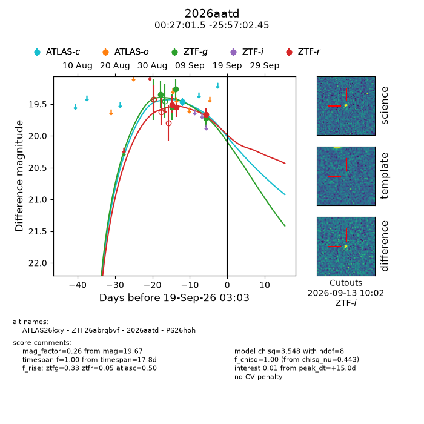
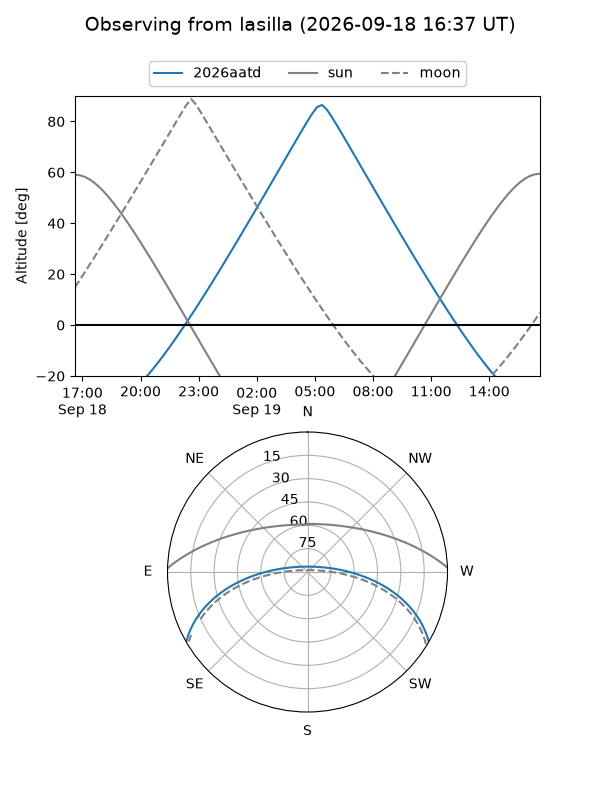
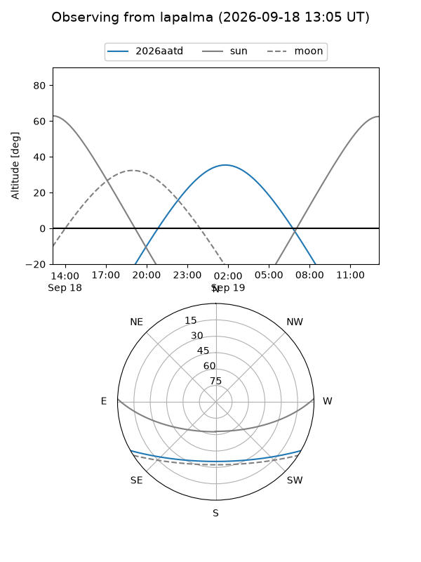
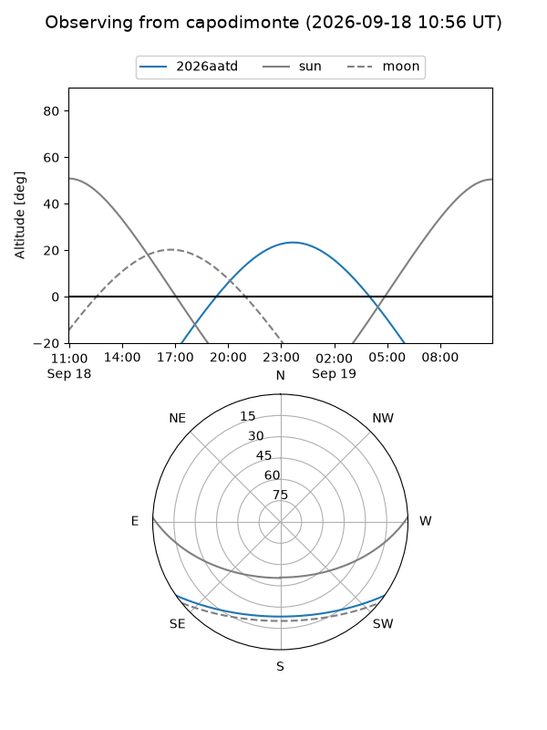
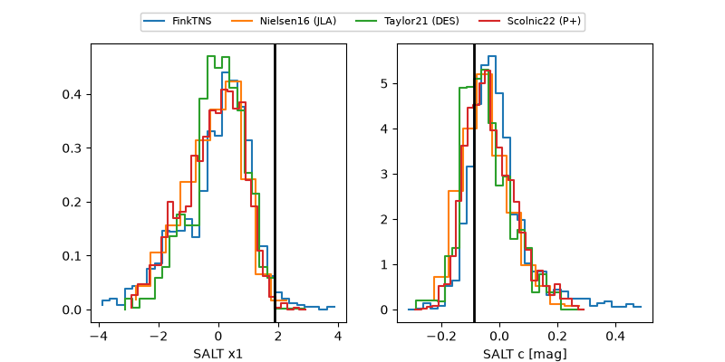

2026aatd
Target 2026aatd at 2026-09-19 03:05
Aliases and brokers:
FINK-ZTF: ztf.fink-portal.org/ZTF26abrqbvf
Lasair-ZTF: lasair-ztf.lsst.ac.uk/objects/ZTF26abrqbvf
ALeRCE-ZTF: alerce.online/object/ZTF26abrqbvf
YSE-PZ: ziggy.ucolick.org/yse/transient_detail/2026aatd
TNS name: wis-tns.org/object/2026aatd
Direct TNS query: direct search
alt names
ZTF26abrqbvf (ztf,fink_ztf)
2026aatd (tns,yse)
ATLAS26kxy (atlas)
PS26hoh (panstarrs)
Coordinates:
equatorial (ra, dec) = 6.7562,-25.95068
equatorial (HMS+DMS) = 00:27:01.49,-25:57:02.45
galactic (l, b) = (43.7263,-84.41499)
Flags:
TNS type: nan
peak dt: +15.0
Photometry:
last atlasc=19.46, ztfg=19.72, ztfr=19.67
1 atlasc, 4 ztfg, 3 ztfr detections
Lightcurve

Visibility



Additional plots
